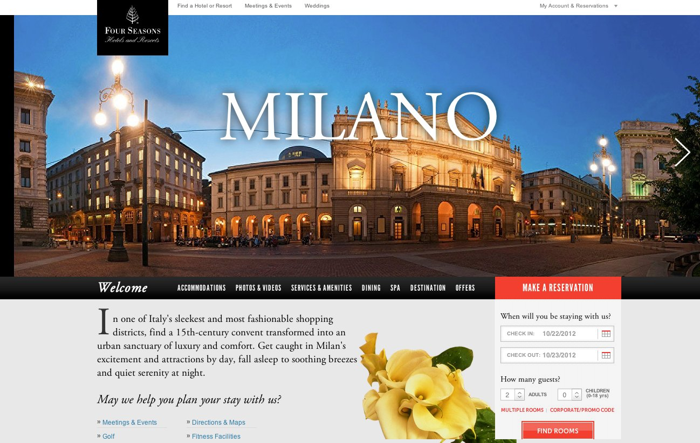
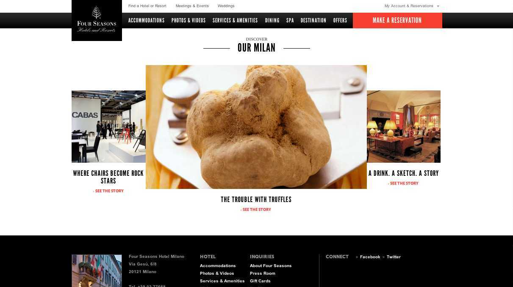
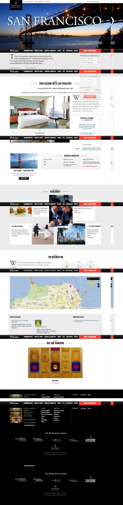

Content framework. 30+ properties. Dozens of languages.
Four Seasons Hotels & Resorts · Huge, 2012–2014Four Seasons was rebuilding its digital presence from the ground up. The problem: the world's most recognized luxury hotel brand sounded exactly like every other luxury hotel brand — marble lobbies, impeccable service, the finest in blah blah blah. The bet was that luxury copywriting describes things when it should tell stories. The lobby has high ceilings and the spa uses locally sourced botanicals — because describing things is the lowest form of writing about them.
I approached it like a journalist — because I was one, before I was a copywriter. I interviewed hotel managers, chefs, concierges, and groundskeepers. I asked about the things that didn't make it into the standard property description: the resident animals, the staff members who'd been there for forty years, the hyperlocal ingredients that showed up in the restaurant, the architectural detail most guests walked past without looking up.
The most visible team member at Four Seasons Resort Chiang Mai won't serve you food at Terraces restaurant or direct you to your pavilion on your arrival. He's content to while his day away in the warm sun — munching on grass by the Rice Barn, cooling himself with frequent baths. Because Tong, a Thai water buffalo and card-carrying staff member, has a different task: tending to the beautiful, terraced rice paddy that surrounds the Resort.
One story, among dozens written across properties on every continent.
Writing the stories was one job. The other was building the editorial framework that would let Four Seasons keep doing it after I was gone — a content strategy that defined what made a good property story, how to find it, how to structure it, and how to maintain a consistent voice across a global team working in dozens of languages and markets. That's the part that scaled. The stories I wrote were the proof of concept; the strategy was the thing that lasted.



Most luxury copywriting describes. Reporting — the habit of asking questions, finding the specific detail, building a story around something real — produces writing that's harder to ignore. The buffalo story works not because it's charming (though it is) but because it's true, and specific, and unexpected. That instinct — find the real story, then tell it — is what I brought from journalism to every brand I've worked on since.
The stories I wrote made it onto individual property pages. The framework made it onto every property page, in every market, for years after I left the project. International Design Awards gave it Gold for website design. Four Seasons still uses the approach.
Luxury describes. Journalism reports. Four Seasons needed the second one.